Nyzo version 588 (commit on GitHub) removes the Micropay run modes. It also updates the initialization process of BlockManager.
This version affects the verifier, sentinel, and client. It also removes two run modes.
This is not a critical update. It contains one optimized method that reduces memory usage, especially if the block-file consolidator is in use. However, its overall importance is more in preparation for future improvements in the block manager. Updating to this version is unnecessary if you do not find it interesting.
In BlacklistManager, the check of whether BlockManager has completed initialization has been renamed. Previously, there was a single field in BlockManager that was used both as a guard for entering the initialization process and a flag to indicate that initialization had completed. That field has been split into two separate fields for those two purposes.
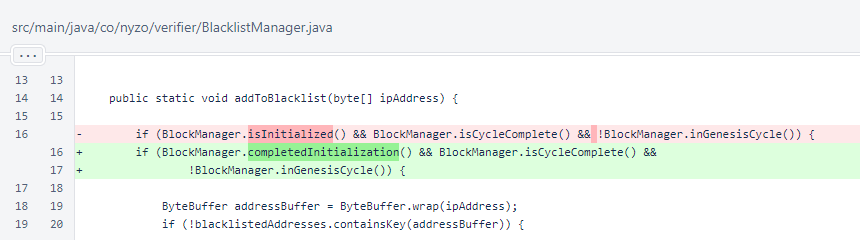In BlockManager, the initialized field was replaced with two separate fields: startedInitialization and completedInitialization. This was done to allow method synchronization to be removed from the initialize() method.
Also, the static block has been removed. This is a significant, far-reaching change. This change has been fully tested for the verifier, sentinel, and client, but it may still have some unintended effects on scripts. This will continue to be reviewed.
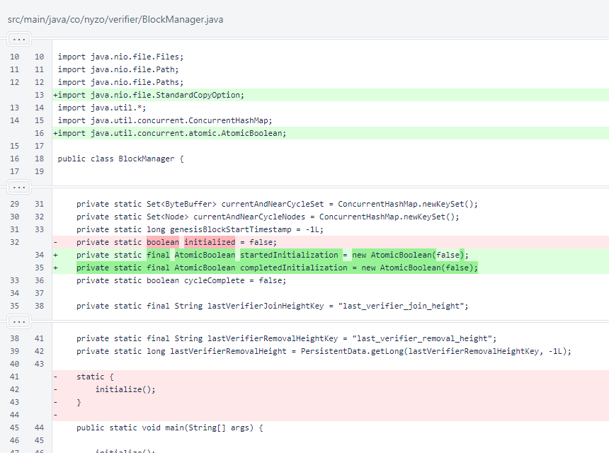The isInitialized() method has been renamed to completedInitialization() for consistency with the new field name.
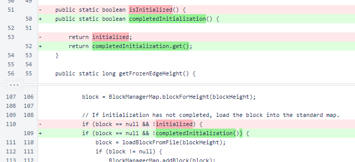The writeBlocksToFile() method has been rewritten to reduce peak memory usage. Instead of assembling the file in memory and writing it in a single pass, a RandomAccessFile is used to write individual blocks and balance lists as they are serialized. The method still sorts blocks ascending on height, and it still makes a map of provided balance lists for lookup.
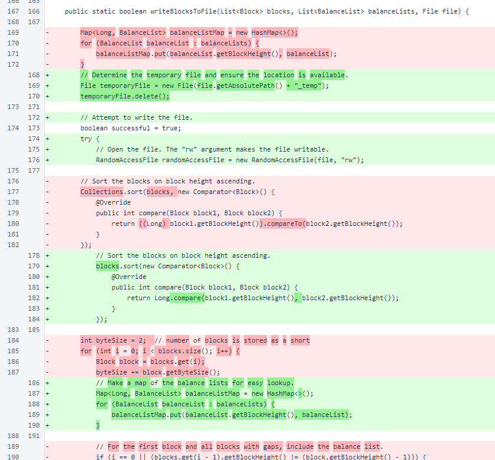The number of blocks is still written as a short (16-bit integer), followed by the blocks. Each block that requires a balance list is followed by the appropriate balance list.
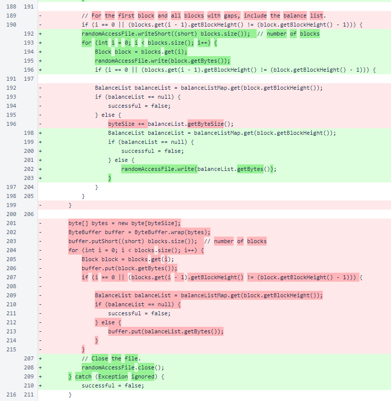The file is written to a temporary location. After the file is written successfully, it is moved to the expected location, replacing the existing file. This atomic replacement ensures that invalid block files will never be present at their expected locations.
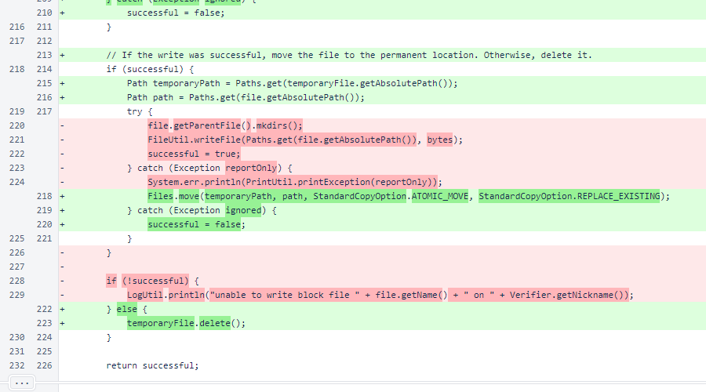A minor appearance improvement, Arrays.asList() calls were replaced with Collections.singletonList() calls in BlockManager.freezeBlock(). The completedInitialization field is now set instead of the initialized field when the Genesis block is frozen. This case only happens
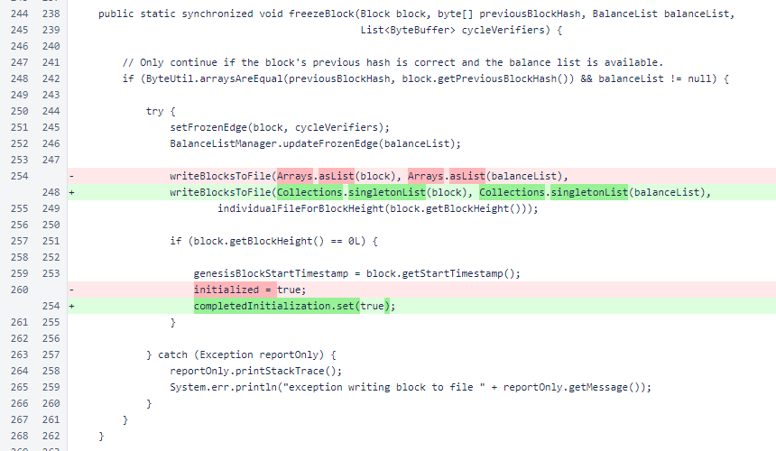The BlockManager.initialize() method is no longer synchronized. This method was already mostly thread-safe, and the use of a separate AtomicBoolean field to control entry into the critical section made the method fully thread-safe without method synchronization.
Initialization time is now displayed. The initialization of BlockManager is a significant part of the overall initialization of the 3 run modes that track the blockchain, and it is an important target for future optimization.
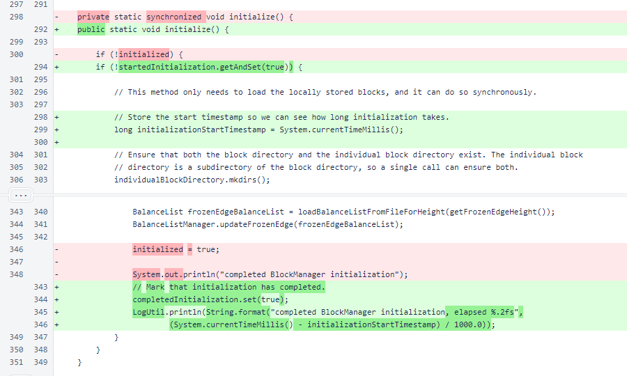In BlockManagerMap, a ConcurrentHashMap is now used to allow synchronization to be removed from the addBlock() method.

In BlockVoteManager, the number of blocks for which votes are retained has been turned into a constant. Other inconsequential cleanup was also performed.
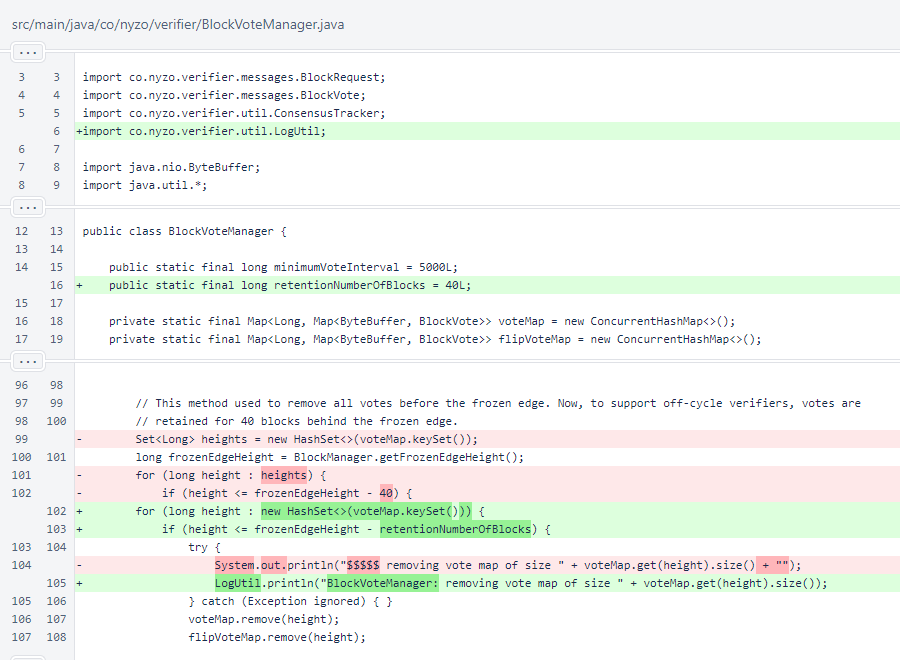Consideration of the MicropayServer run mode was removed from the Message class. The Micropay server and Micropay client were eliminated so that Micropay efforts can be focused on development of the client and the browser extensions.
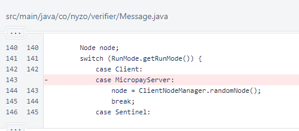Synchronization was removed from NewVerifierQueueManager.updateVote() method. It was already thread-safe.
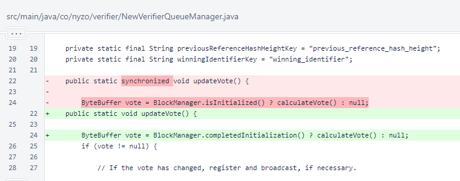The MicropayClient and MicropayServer run modes were deleted.
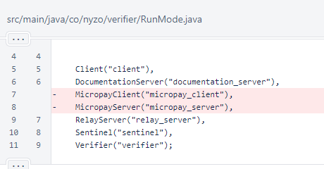The BlockManager.initialize() method is now called immediately after setting the run mode for the 3 run modes that use the BlockManager.
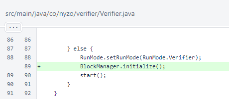The Client also initializes the BlockManager explicitly.
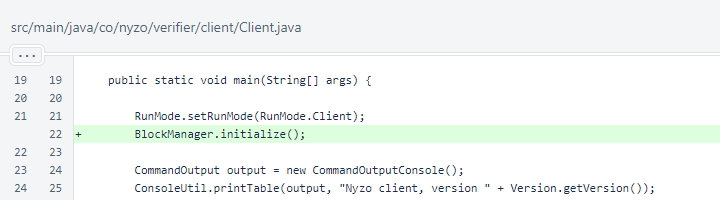The MicropayAuthorization class was removed. A class with similar functionality will be needed for the demonstration of the new browser-extension Micropay functionality, but this will be implemented as a clean, purpose-built solution.
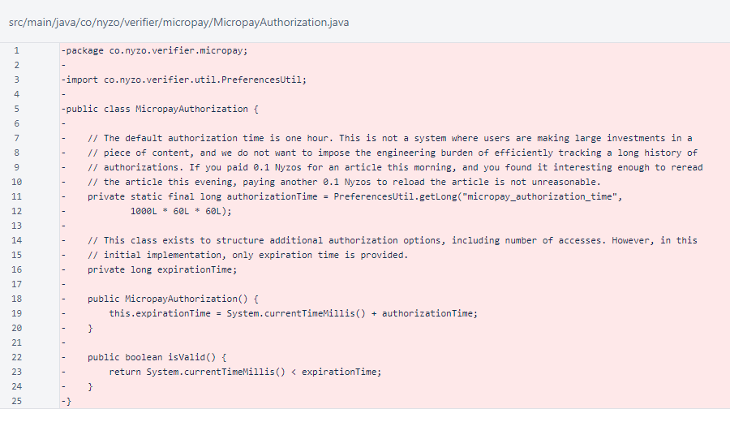The MicropayClient class was removed. This class was the entry point for the Micropay client application, which ran locally to allow in-browser payments to be made. While this was an exceptionally interesting application, it was never widely used.
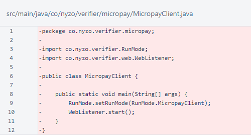The MicropayController class, which supported the MicropayServer, was also removed. The old Micropay server tracked the blockchain, serving as a bridge between the web and the Nyzo mesh. New Micropay functionality will not have any direct communication with the Nyzo mesh. Instead, all Micropay functionality will use a Nyzo client as an intermediary to the Nyzo mesh.
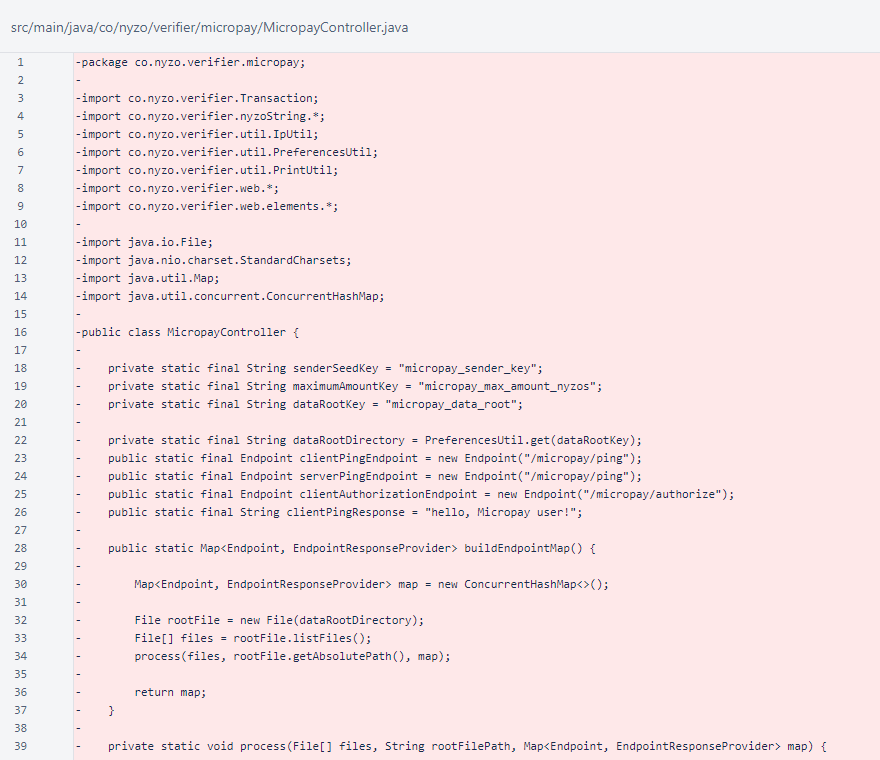The MicropayEndpoint class was also removed. This class managed Micropay authorizations and delivered web content.
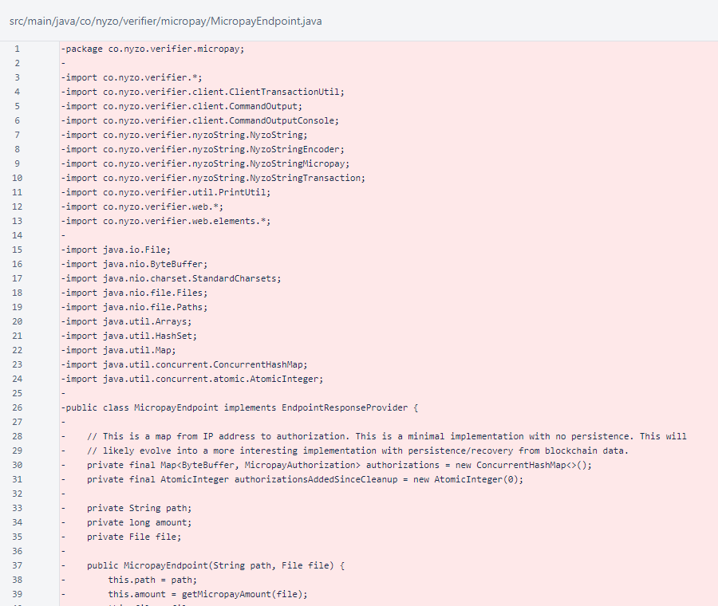The MicropayServer class, the entry point to the Micropay server application, was removed.
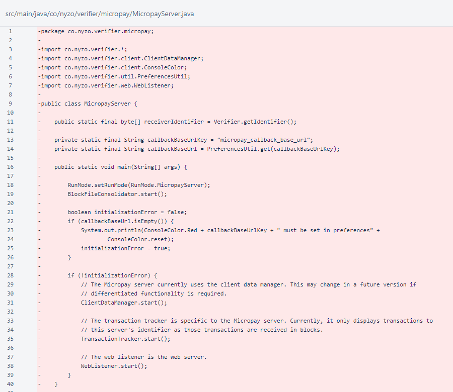The TransactionTracker followed the blockchain to monitor incorporation of Micropay transactions.
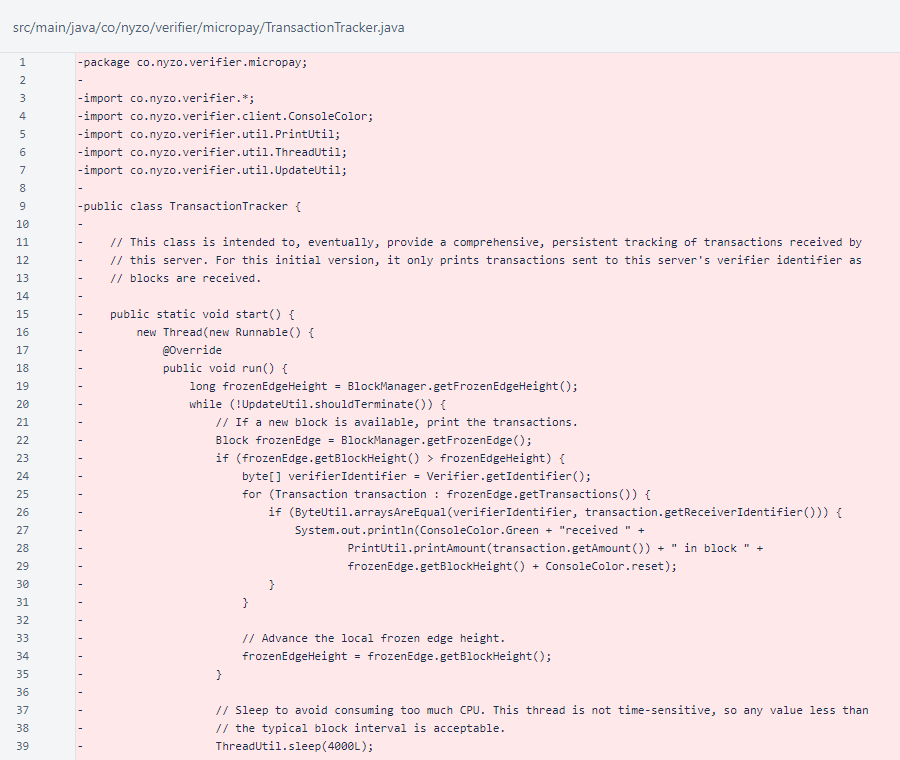The Sentinel class must now explicitly initialize BlockManager.
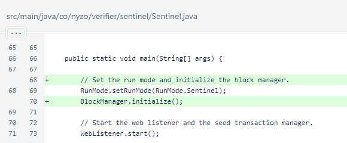In WebListener, consideration of the Micropay run modes has been removed.
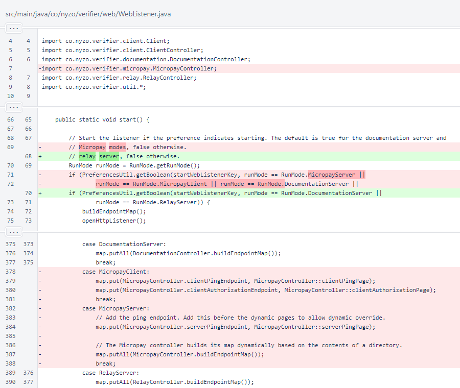